5 packs gratuits et libres de droits (CC0, auteur Quaternius), 42 modèles déjà animés par un artiste. Pour chacun : ses animations et les créatures qu'il pourrait remplacer.
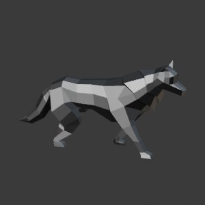
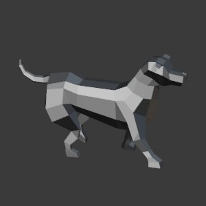
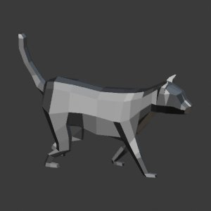
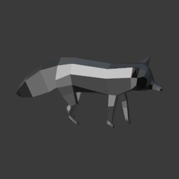
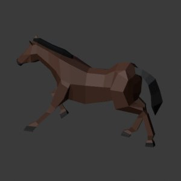
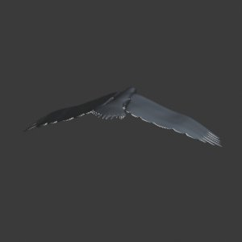
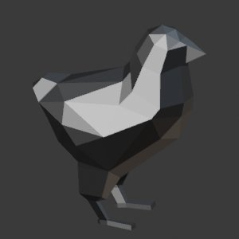
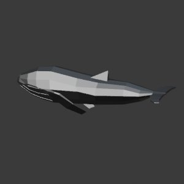
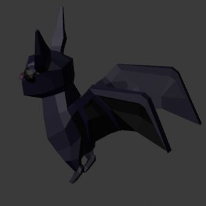
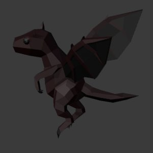
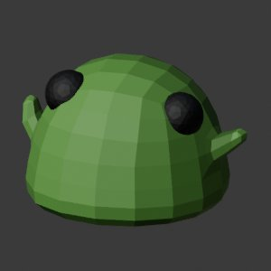
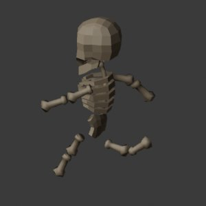
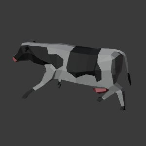
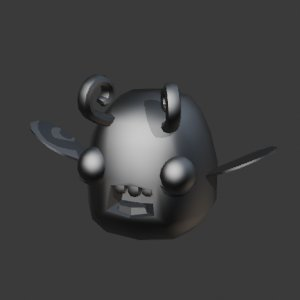
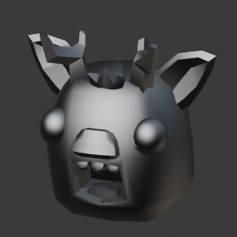
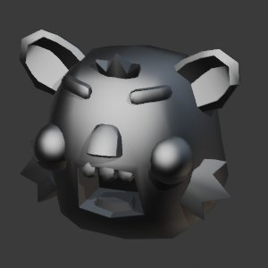
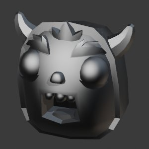
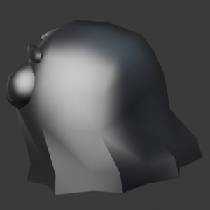
AngeLumineux, Araignee, AraigneeCristal, ChampiSauteur, DragonCeleste, Ecureuil, FeeCeleste, FeeLumineuse, FeuFollet, GardienCeleste, Gargouille, Geant, GolemAncien, GolemCitrouille, GolemCristal, GolemGeode, GolemGlace, GolemMagma, GolemMeteore, GolemPierre, Grenouille, Griffon, GriffonCeleste, GriffonDore, Herisson, Hippocampe, Hydre, KrakenVide, Lapin, LapinAile, LapinFarceur, LapinLicorne, LapinLunaire, Loutre, MeduseAstrale, Papillon, PetitKraken, Pingouin, PoulpeNebuleuse, PrismeSupreme, RatonLaveur, RoiCitrouille, SalamandreFeu, ScarabeeGeant, ScarabeeLave, Souris, SphinxDore, TaupeMineuse, TortueCristal
• Style : ces modèles sont en facettes simples (low-poly), sans les textures détaillées de tes créatures. Ceux marqués « mignon » ont de gros yeux de bébé (tu n'aimes pas ce style).
• 🟡 « à adapter » = le corps et la démarche vont, mais il faut ajouter la corne, les ailes ou les queues (faisable dans Blender).
• Certains n'ont pas de marche (cochon, lama, mouton, pingouin, champignon : seulement « Idle »).